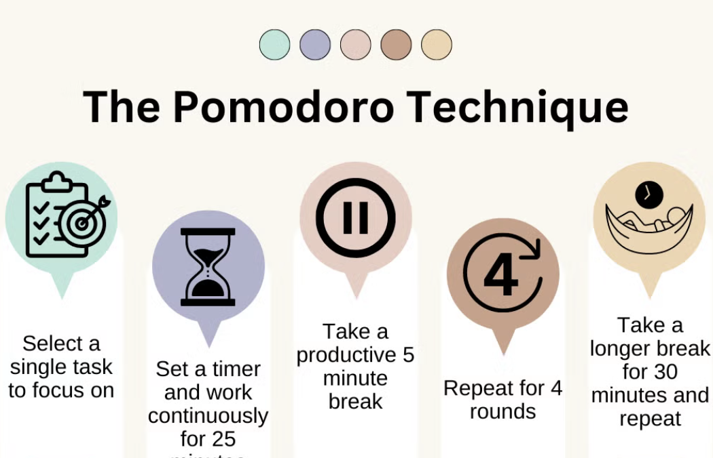

Date
April 8, 2026
Attendees
- Darci
- Shawn
- Brina
Meeting start 3:00pm
Agenda
Brainstorm Ideas
- Discuss features for the Pomodoro Timer app
- Assign tasks for development
- Set deadlines for milestones
Next Meeting
April 15, 2026
- Review on feature and progress work
- Improvemnts to features
- Set deadlines for milestones
Last Meeting
April 01, 2026
- Got to know teammates
- Project Introduction
- Ice breaker Activity
Meeting interrupted 3:45pm by Fire Alarm: Early Ending
Important: Might Have another mini meeting again soon.
Reminder: Stay focused during sessions.
Tip: Take short breaks.
Other References
Image

Audio
Video
Additional Notes
Click to view extra meeting details
We want Joseph off the team!!!